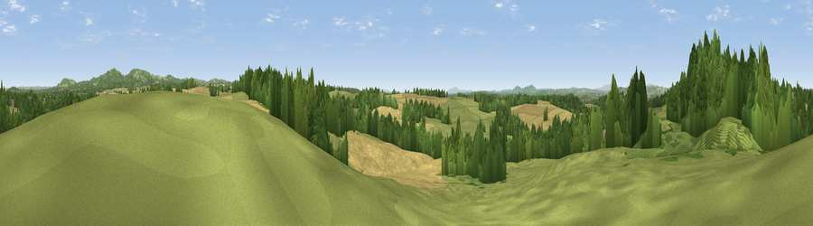

Viewpoint near Drayton
#22274 in England · top 39% of its area beats it · near DraytonThe view, rendered

A 360° render of this exact spot computed from the terrain model, tree cover and land cover — summer colours, afternoon light, calibrated against photographs of famous viewpoints. Real trees, hedges and buildings will differ in detail.
The panorama
Grey silhouette: terrain skyline in each direction (720 bearings, Earth curvature and refraction included). Dashed green: skyline with trees (+15 m) and buildings (+8 m) as obstacles. Blue strip: how far the ground is visible on each bearing.
Where the view opens
Wedge length = distance to the farthest visible ground on that bearing (vegetation-aware). Rings at 10, 25 and 50 km.
What fills the view
35% woodland · 32% cropland · 32% grassland · 2% built-up
Angular shares of the visible panorama (visual magnitude), not map area. Landscape diversity 0.51 (0–1 Shannon).
Key numbers
More beautiful places nearby
The staircase of upgrades: each row has a higher view potential than everything closer. Driving times are estimates from straight-line distance, calibrated against real road routing — check an actual route before setting out.
| Place | Direction | Drive | Score |
|---|---|---|---|
| Viewpoint near Blakedown | NW · 1 km | ~2 min | 55.1 |
| Viewpoint near Drayton | SE · 2 km | ~6 min | 57.2 |
| Viewpoint near Clent | NE · 5 km | ~12 min | 74.3 |
| Viewpoint near Abberley | SW · 16 km | ~28 min | 77.5 |
| Viewpoint near Abberley | SW · 17 km | ~29 min | 78.1 |
| Abberley Hill | SW · 17 km | ~30 min | 80.4 |
| Viewpoint near Great Witley | SW · 19 km | ~32 min | 83.4 |
| Titterstone Clee | W · 30 km | ~47 min | 83.8 |
52.38934, -2.16049 · source: screening · position refined by local search. Computed location — check access rights before visiting.